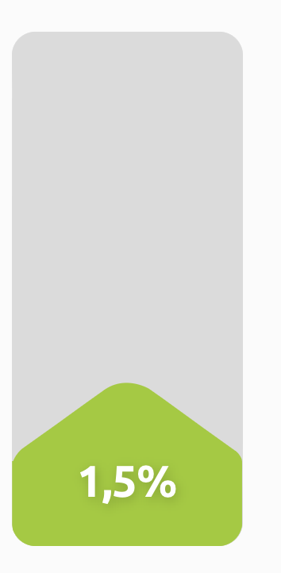
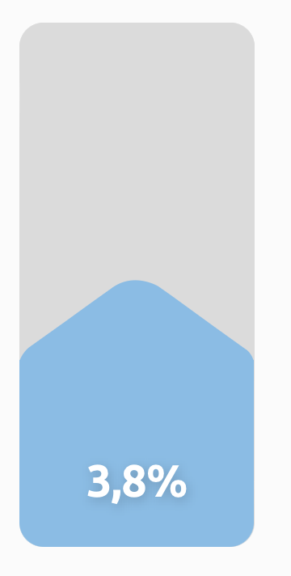
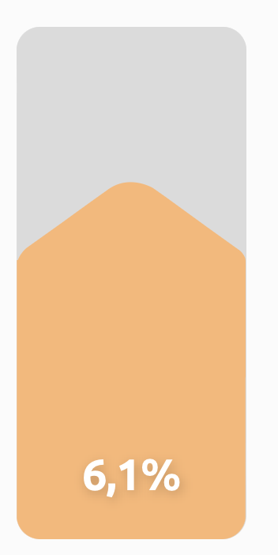
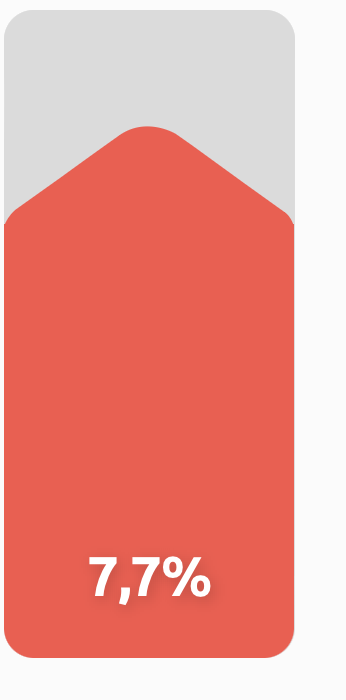

Beleggen
Welkom bij Bo's Vermogensbeheer. Professioneel beleggen voor iedereen. Of je nu 7.500 of 750.000 euro wilt laten beleggen. Bo's vermogensbeheer beheert ruim 400 miljoen euro voor meer dan 4.000 klanten.

Persoonlijk beleggen
Vanaf 7.500 euro
Keuze uit 4 risicoprofielen
Welkom op onze website
Wij bieden professionele diensten aan.
Meer informatieBeste online vermogensbeheer van Nederland
Axento is door IEX Gouden Stier verkozen tot Beste online vermogensbeheerder van Nederland 2020. “Van alle genomineerden wist Axento de daling tijdens de coronacrisis het meeste te beperken. Daarbij behaalde Axento ook nog eens het hoogste rendement.”
Onze behaalde rendementen
Bij Axento kun je beleggen in vier verschillende risicoprofielen. Bekijk hieronder het gemiddelde nettorendement per jaar van 1 januari 2016 t/m 8 september 2023. De rendementen zijn gebaseerd op daadwerkelijk behaalde rendementen van klanten bij Axento.
Defensief
Neutraal
Offensief
Zeer Offensief
Professioneel beleggen voor iedereen, zonder gedoe
Beleggen bij Axento is eenvoudig en zonder gedoe. Je bepaalt (samen met ons) hoeveel risico je wilt nemen en welk rendement je nastreeft. Vervolgens nemen wij het beleggen en alles daaromheen voor je uit handen. Je hebt er dus zelf geen omkijken naar.